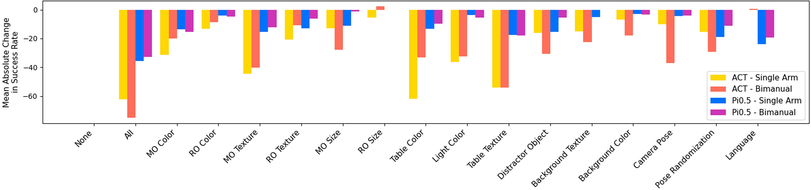
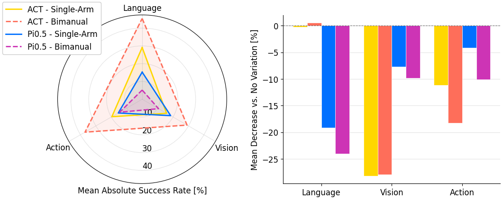
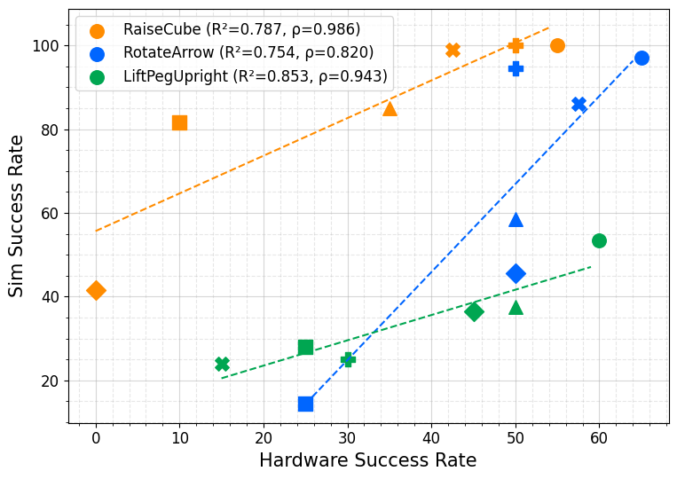

Sixteen tasks cover picking, pick-and-place, reorientation, insertion, tool use, articulated object interaction, and long-horizon manipulation.
Vision-Language-Action (VLA) models demonstrate promising generalization in robotic manipulation, driven by advances in large-scale vision and language pre-training. This progress can be misleading: despite strong zero-shot perception and language capabilities, task performance often degrades under distribution shifts, revealing gaps in how these systems translate high-level understanding into robust behavior.
We introduce Colosseum V2, a large-scale simulation benchmark for evaluating VLA generalization across diverse conditions. The benchmark comprises 28 tasks spanning 13 task categories and two robot morphologies, covering a wide range of manipulation primitives and long-horizon behaviors. Built on ManiSkill, Colosseum V2 enables fast, GPU-parallelized evaluation and supports both in-domain and out-of-domain testing at scale.
We evaluate state-of-the-art methods, including Action Chunking Transformers (ACT) and π0.5, and reveal limitations in both base performance and generalization. Hardware experiments show strong correlations between simulation and real-world metrics, supporting the benchmark's ecological validity.
Colosseum V2 evaluates generalization along visual, language, and action axes. It uses two Franka Panda setups: a single-arm manipulator with a parallel-jaw gripper and a bimanual configuration with two Panda arms operating in a shared workspace. Tasks are organized from simple manipulation primitives through temporally extended, long-horizon behaviors.
Sixteen tasks cover picking, pick-and-place, reorientation, insertion, tool use, articulated object interaction, and long-horizon manipulation.
Twelve tasks test handovers, cooperative lifting, reorientation, insertion, articulated object interaction, and long-horizon dual-arm coordination.
The benchmark provides initial evaluations of two language-conditioned imitation learning models: ACT and π0.5. Models are trained separately for the single-arm and bimanual test suites using 100 perturbation-free demonstrations per task, then evaluated on each perturbation individually over 200 episodes.
GPU-parallelized simulation makes the evaluation statistically thorough without making it prohibitively slow. On a single RTX 4090, ACT can be evaluated on both test suites in 11.5 hours while producing ten times as many success-rate measurements as the original Colosseum evaluation setup.


ACT shows larger average success-rate drops under visual perturbations than π0.5: 28.57% and 29.06% on the single-arm and bimanual suites, compared with 7.73% and 9.86% for π0.5. The paper hypothesizes that π0.5 benefits from larger pretrained visual representations.
ACT is nearly invariant to language rephrasings, with average drops of 0.28% and -0.57%. π0.5 drops 19.16% and 24.0%, suggesting that fine-tuning the whole model can reduce robustness to semantically equivalent instructions.
Pose randomization is a primary challenge for both model families, especially in bimanual tasks where the action space and coordination demands are larger.
ACT achieves higher perturbation-free success rates than π0.5 on both suites, suggesting a tradeoff between task-specific proficiency and broader robustness.
Across morphologies, perturbations have remarkably consistent effects. The average change in mean absolute success-rate drop between single-arm and bimanual suites is 10.83% for ACT and 3.69% for π0.5, indicating that perturbation factors expose model-specific generalization behavior rather than only task-specific artifacts.

Markers denote perturbations: • (None), ◆ (MO Color), ■ (Light Color), ▲ (Distractor Object), + (Background Color), and rotated + (MO Size).
To assess sim-to-real transfer, the benchmark recreates three single-arm tasks on real hardware: RaiseCube, RotateArrow, and LiftPegUpright. A multi-task ACT policy is trained from scratch with 60 demonstrations per task and evaluated under no perturbation, manipulation-object size, manipulation-object color, background color, and lighting changes.
Simulation does not perfectly predict absolute hardware success rates, but it strongly predicts relative degradation under perturbations. The average R-squared for predicting success-rate change is 0.798, and the average Spearman correlation is 0.916, indicating that the ordering of perturbation difficulty is largely preserved between simulation and hardware.
@misc{morgan2026colosseumv2benchmarkinggeneralization,
title={Colosseum V2: Benchmarking Generalization for Vision Language Action Models},
author={Jeremy Morgan and Prajwal Vijay and Hyeonho Oh and Jincen Song and Ashvin Arora and Alina Du and Gaurav Sukhatme and Jesse Thomason and Ishika Singh},
year={2026},
eprint={2605.27759},
archivePrefix={arXiv},
primaryClass={cs.RO},
url={https://arxiv.org/abs/2605.27759},
}